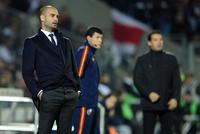

Un partido en una jugada
Sat, 26 Nov 2011 22:17:00 +0100
No fue el Madrid de los últimos tiempos, ese equipo que al primer parpadeo manda a la lona al adversario. Esta vez un lance le abrió el camino cuando el Atlético apretaba en un derbi más que en los últimos 12 años. Logró enredar al Madrid durante 25 minutos e incluso ponerse en ventaja. Hasta que Courtois se cruzó en el camino de Benzema. El meta fue expulsado y Cristiano embocó el penalti. Lo demás fue una quimera para los rojiblancos.
El Getafe estrangula al Barça
Sun, 27 Nov 2011 00:08:00 +0100
Al Barcelona se le escapa la Liga antes de llegar al Bernabéu. Ha ido descontando puntos de mala manera en cancha ajena. Algunos, en partidos muy exigentes, como los de Mestalla y San Mamés; otros, en accidentes, como el del Camp Nou con el Sevilla. También ha penalizado en estadios aparentemente sencillos, como Anoeta y anoche el Coliséum Alfonso Pérez. Imponente el miércoles en San Siro, perdió la imbatibilidad en el feudo del Getafe y se ha quedado descolgado, a seis puntos del Madrid, cuando solo falta una jornada para visitar Chamartín. Ni siquiera disputar el martes el partido adelantado contra el Rayo le permitirá igualar al Madrid. No perdía el Barça desde el 30 de abril, en el campo de la Real Sociedad. Así que la primera derrota fue también la más cruel porque el margen de error era mínimo.
Íñigo Martínez, el artista reincidente
Sun, 27 Nov 2011 17:16:00 +0100
Dice Philippe Montanier que en las notas previas del partido habían apuntado que Casto, el portero del Betis, tiene por costumbre jugar muy adelantado. Y dice también que Iñigo Martínez, el central de la Real que le sorprendió desde la raya divisoria del medio campo, suele ensayar mucho estas jugadas en los entrenamientos. No es que Montanier quiera decir que el gol del defensa vizcaíno estuviera en la pizarra del partido, menos cuando el gol de la victoria se produjo en el período añadido del partido.
El Levante está cocido a fuego lento
Sun, 27 Nov 2011 18:05:00 +0100
El Levante no es flor de un día, sino que está cocido a fuego lento. Dispuesto a permanecer en la élite lo que le permita su imaginación, en vuelo celestial desde hace meses. Alentado ante el Sporting por los magníficos pases de Farinós, los quiebros de Barkero y las elegantes cabalgadas de Koné. Si a eso le añade la fiereza defensiva mantenida del año pasado, el equipo levantino ofrece unos números impecables: 23 goles a favor, dos más, por ejemplo, que el Valencia, y 12 en contra, uno menos que su poderoso vecino. El Sporting quiso ser protagonista y, en su audacia, cayó víctima de la mortal contra de los granota. Tan superiores estos en la segunda parte que Juan Ignacio Martínez se puso a hacer cuentas y, entre ellas, le pareció conveniente provocar la quinta tarjeta de Barkero, baja en el Camp Nou en la próxima jornada, de vuelta en el duelo frente al Sevilla.
Contra la mala pata, buen pie
Sat, 26 Nov 2011 23:25:00 +0100
Eneko, Fito, Mackay, Agustín, Rodríguez, Pablo Ruiz... Para enumerar los lesionados del Sabadell y sus dolencias, el doctor Bernat de Pablos necesita emplear casi dos minutos. El equipo catalán ha sufrido desde el principio del campeonato una plaga de bajas que con frecuencia han impedido a su técnico, Lluís Carreras, completar las convocatorias con futbolistas del primer equipo. En el club, sin embargo, nadie quiere usarlas como excusa para explicar el bajón que atraviesa. Revelación de la Segunda División en el arranque de la Liga, admirado por un fútbol de asociación que le elevó al coliderato en la novena jornada, el Sabadell ha encadenado seis jornadas sin ganar, cayendo a la zona media de la tabla. ¿Preocupación? Ninguna. "La norma en Segunda es lo que nos pasa ahora. Lo del principio no era normal", afirma con absoluta calma Carreras, empeñado en salir del bache con el fútbol ofensivo y de toque en el que ha creído siempre. Totalmente comprometidos con su causa, el buen pie de sus jugadores puede ponerle fin a la mala racha hoy ante el Murcia (21.30; C+ Liga/GolT).
El Liverpool ya está maduro
Sun, 27 Nov 2011 19:21:00 +0100
Al Liverpool la Premier le resulta hoy en día demasiado larga, sobre todo porque le falta profundidad de armario y porque llega de unos años de flaqueza, con más debilidades que otra cosa, crisis de identidad. Pero es un equipo maduro, con galones y futbolistas efervescentes, que puede poner en entredicho a cualquiera, incluso a los más grandes, como el Chelsea, al que batió el fin de semana anterior, y al Manchester City, el líder al que le empató y no le hizo más daño de milagro, el que realizó Hart con las paradas a última hora. Duelo intenso en Anfield donde se enfrentaron dos estilos de juego, el fútbol de toda la vida de Inglaterra y el de la nueva generación, el que corresponde a los quilates y el que se impone con un goteo incesante. Se quedó en tablas, que no en agua de borrajas.
Como el fénix de las cenizas
Sun, 27 Nov 2011 07:00:00 +0100
- "Nunca es demasiado tarde para ser quien podrías haber sido".
Webber se impone y Alonso acaba cuarto
Sun, 27 Nov 2011 18:58:00 +0100
La amenaza de la lluvia sobrevoló por el circuito de Interlagos durante toda la carrera del Gran Premio de Brasil. Sin embargo, no apareció. La última carrera del curso tuvo un desarrollo lógico, sin grandes incidencias, sin accidentes que pudieran perjudicar a los líderes y dieran opciones a los aspirantes. Nada. Pero hubo una circunstancia que cambió el rumbo habitual de los acontecimientos en este Mundial de fórmula 1: el ganador fue el australiano Mark Webber y no Sebastian Vettel como venía ocurriendo. Y la causa fue que el alemán, ya doble campeón mundial, bajó su ritmo porque su equipo le indicó que tenía problemas con la segunda velocidad y que debía utilizar esta marcha lo menos posible.
La NBA salva los muebles
Sun, 27 Nov 2011 07:00:00 +0100
El dinero y la imagen prevalecieron como no podía ser de otra forma en la NBA, una Liga que precisamente mima como pocas ambos aspectos. No podía prolongarse más el cierre patronal, salvo que las partes en conflicto decidieran consumar definitivamente su descrédito y arruinaran la competición. Cuando se cumplían 149 días desde que los propietarios echaran el cierre, los representantes de los jugadores y de los clubes dijeron haber visto la luz al final del túnel. Y, tras la enésima reunión maratoniana -15 horas esta vez- en un hotel de Nueva York, dieron por hecho un principio de acuerdo que ahora deberán someter a votación.
Inyección de autoestima
Sun, 27 Nov 2011 17:22:00 +0100
El Gescrap Bizkaia salió ante su público con el ánimo tocado y las expectativas disminuidas. La obligación de ganar al Estudiantes de Pepu Hernández era ineludible tras las derrotas de la pasada semana ante el Cajasol y el Olympiacos. Los bilbaínos lograron, no sin sufrir, la victoria tras haber sabido dominar el último arreón de los madrileños, que a punto estuvieron de agravar la crisis de los de Fotis Katsikaris.
Un boquete de seis puntos
Sun, 27 Nov 2011 17:16:00 +0100
"Queda mucha Liga", repetían el sábado con insistencia los miembros de la expedición del Barcelona tras caer ante el Getafe (1-0). "Competimos contra un gran rival y tendremos pocas oportunidades de fallar otra vez", añadió el técnico, Pep Guardiola, consciente de que la distancia que les separa del Real Madrid acababa de crecer hasta los seis puntos (28 por 34), algo que no se veía desde 2008. Ningún equipo dirigido por José Mourinho, entrenador blanco, ha desperdiciado nunca una renta de al menos tres puntos para acabar siendo campeón. Y la última vez que los azulgrana le recortaron una ventaja de seis al Madrid para acabar ganando la Liga, Guardiola era un chaval de 21 años que no había jugado ni medio centenar de partidos como culé. Corría 1992 y Johan Cruyff se sentaba en el banquillo del Camp Nou.
Llorente: "Bielsa siempre me pide más"
Sun, 27 Nov 2011 07:00:00 +0100
Con la llegada de Marcelo Bielsa, el mundo futbolístico de Fernando Llorente (Pamplona, 1985) cambió. De pronto, el poste central debía bambolearse y participar en el juego colectivo del equipo más allá de ser referente del aéreo. Le costó, según dice, pero lo agradeció. Su actitud no ha variado desde hace años. Lleva casi 80 partidos oficiales consecutivos alineándose en el once inicial y está a punto de ser el futbolista de campo con más participaciones seguidas en el Athletic (ahora es Urkiaga). Hoy, con Bielsa y sin demérito de Joaquín Caparrós, que le dio el aire que necesitaba para resurgir tras un periodo negro, Llorente se siente mejor jugador en un equipo mejor.

Íñigo Martínez revienta Heliópolis
Sun, 27 Nov 2011 14:13:00 +0100
En un final de infarto, una obra de arte de Íñigo Martínez en el minuto 92 propició el triunfo de la Real Sociedad ante un Betis que fue capaz de igualar un 0-2 en contra con todo perdido. El golazo de Íñigo Martínez, que reventó Heliópolis con un zurdazo desde su propio campo, no es el primero que anota de esta forma el central del conjunto donostiarra. Ya en el clásico vasco, en Anoeta, el defensa anotó otro tanto de la misma manera, de un disparo tan lejano como preciso. Entonces, el gol no le sirvió de mucho a su equipo (ganó el Athletic por 1-2). En Sevilla, valió un triunfo cuando la Real daba por bueno el empate y el Betis, lleno de emoción, desbocado, no supo entender la valía de la igualada. Cayó por el pelotazo sublime de Íñigo Martínez, pero también por su obsesión de morir en el área de la Real, con cuatro delanteros, sin saborear lo importante que hubiera sido un punto. El golazo fue el punto y final a un partido enloquecido, de dominio alterno, donde el orden de la Real pudo más que este Betis sin control, sin freno, que ha entrado en barrena. Respira la Real y golpe durísimo para el Betis.

La puntería se impone a la fe
Sat, 26 Nov 2011 20:20:00 +0100
La pizarra de Unai Emery y la eficacia de su pelotón de delanteros le valieron al Valencia para cumplir el expediente ante un Rayo al que le sobró alma y le faltó puntería. En un partido áspero, que no sucio, con el físico y las triquiñuelas tácticas cortando cualquier innovación, el acierto de Jonas inclinó a los 20 minutos la balanza a favor del conjunto visitante, que sacó el máximo rendimiento a sus aproximaciones al área vallecana. El delantero brasileño convirtió una apertura de Mathieu hacia el interior aparentemente intrascendente en un zarpazo mortal para el cuadro de José Ramón Sandoval; Jonas le pegó desde fuera del área, con un derechazo ajustado al palo que le salió que ni pintado al brasileño. El gol sorprendió a Cobeño, no muy afortunado en la jugada, pero no anestesió al Rayo, que se resistió a tirar la toalla incluso cuando Tino Costa embocó una jugada a tres bandas.
Soriano recupera el gol
Sat, 26 Nov 2011 21:36:00 +0100
Jonathan Soriano (Pont de Vilomara, Barcelona; 1985) terminó la temporada pasada marcando un hito goleador en su equipo, el Barcelona B, cuando sumó 32 dianas en Segunda División y se llevó el galardón de pichichi. Su buen curso le valió la llamada de Pep Guardiola, técnico del primer equipo, para hacer la pretemporada. Pero durante el enfrentamiento de la Copa Audi contra el Bayern de Múnich, el 27 de julio, se rompió la rodilla derecha, una distensión en el ligamento anterior. Hasta hace un mes, cuando jugó contra el Nàstic. Hasta ahora, frente al Celta, cuando ha vuelto a hacer lo que mejor sabe, perforar la red contraria. El primero, tras peinar un saque de falta botado por Gustavo; el segundo, al aprovechar un balón que rebotó en la barrera en otro libre directo, esta vez sacado por Rafinha. Dos dianas y victoria azulgrana (2-1).
Muere a los 42 años Gary Speed, técnico de Gales y exfutbolista
Sun, 27 Nov 2011 14:37:00 +0100
El seleccionador de Gales, Gary Speed, ha muerto a los 42 años, según ha comunicado la Federación de fútbol galesa a través de un escueto comunicado. "Transmitimos nuestras condolencias a la familia y pedimos a todo el mundo que respete la privacidad de sus familiares en estos momentos muy tristes", reza la nota. Según la agencia Reuters, la policía ha confirmado haber encontrado el hombre ahorcado en su casa de Huntington, en Chester (noroeste de Inglaterra) y ha afirmado que no existen "circunstancias sospechosas alrededor del fallecimiento".
Old Trafford tiene un agujero
Sat, 26 Nov 2011 19:29:00 +0100
Old Trafford ya no es el fortín que era. Al menos la temporada pasada, cuando el Manchester United solo dejó escapar dos puntos, en un empate ante el West Bromwich Albion. Resulta que en este año el templo de los red devils ya ha visto a su equipo perder cinco puntos. Después de la tremenda goleada sufrida en el derbi contra el Manchester City (1-6), los de Ferguson chocaron contra el muro defensivo erigido por el Newcastle (1-1), la sorpresa de la temporada. Con este empate, los urracas conservan el cuarto puesto ante la ofensiva del Chelsea -que liquidó 3-0 a los Wolves con un tanto de Mata, el tercero-; y el Mufc se descuelga un tanto de la lucha por el liderato, a cuatro puntos del City, que tiene un partido menos.
Sofocón del Barça en Santiago
Sun, 27 Nov 2011 15:13:00 +0100
Hubo un momento a catorce minutos del final en el que el Barcelona, doce abajo en el marcador (59-47) sintió que se había metido en una emboscada sin salida, en el que percibió que podía dejarse el liderato de la ACB en su visita a la cancha de Fontes do Sar, feudo de un equipo recién ascendido, en puestos de descenso, pero con alma irreductible y una historia forjada a base de pelear imposibles. Es ante los desafíos hercúleos cuando el Obradoiro ofrece lo mejor. Había llegado al partido entre dudas, con rumores de movimiento en la plantilla después de cinco derrotas consecutivas. Se discutía la aportación de Ebi Ere y Stephane Lasme, dos de los refuerzos del equipo, encargados de aportar un salto de calidad que en este tramo de competición apenas se ha atisbado. Hasta esta mañana.
Al ritmo histórico del equipo Telefónica
Sat, 26 Nov 2011 19:30:00 +0100
Con una velocidad endiablada, aprovechando la rotura de los mástiles de los barcos rivales y siguiendo la ruta más larga. Así ha conseguido el Team Telefónica arribar líder a Ciudad del Cabo para anotarse la primera regata oceánica de la Volvo Ocean Race, el Everest del mar. El equipo español, capitaneado por los campeones olímpicos y nombrados recientemente mejores regatistas del mundo, Iker Martínez y Xabi Fernández, ha logrado un triunfo histórico. Es la primera vez que un barco español se impone en la primera etapa de la Volvo Ocean Race y también la primera vez que gana un patrón español. Después de 22 días en alta mar, el Telefónica ha dejado por el camino a tres barcos de los seis que participan en la regata - el Abu Dhabi Ocean Race, Team Sanya y el Puma, que tuvieron que abandonar-, los temidos 40 rugientes o los enormes albatros.
"Tendremos que fallar poco"
Sun, 27 Nov 2011 01:42:00 +0100
El gesto serio, las respuestas cortas, directas, el discurso claro. "Queda mucha Liga", recordó el entrenador del Barcelona, Pep Guardiola, e insistieron en lo mismo también sus futbolistas el día en que cosechaban su primera derrota después de 21 partidos. El equipo corría el riesgo de caer en el pesimismo poco después de ver que el Madrid no había concedido ocasión al Atlético, así que el técnico se apresuró a poner los puntos sobre las íes: "Ahora tenemos que seguir, porque nos queda mucho trayecto. Es cierto que competimos contra un gran rival y tendremos pocas oportunidades de fallar otra vez, pero saldremos adelante", afirmó.
